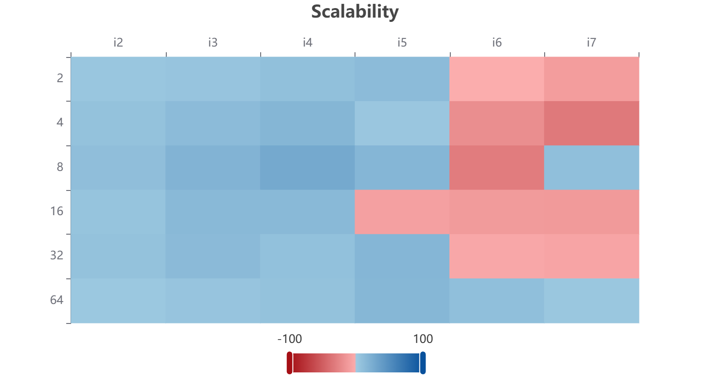
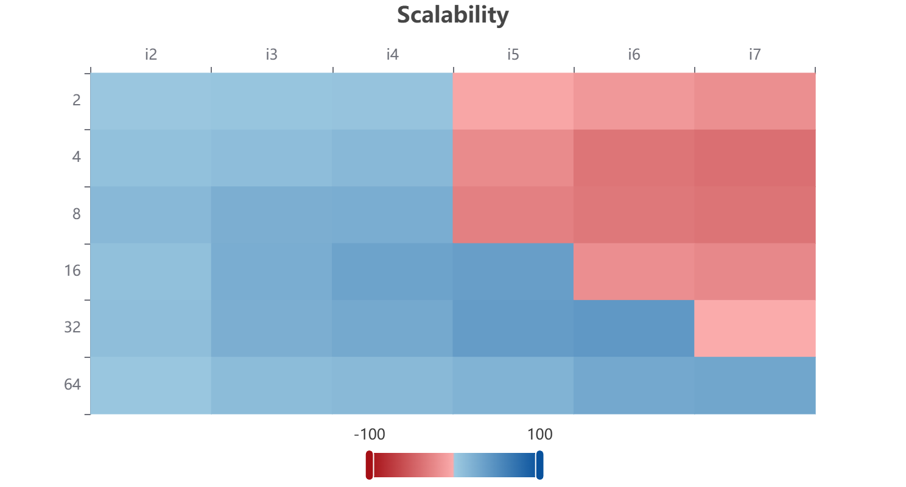
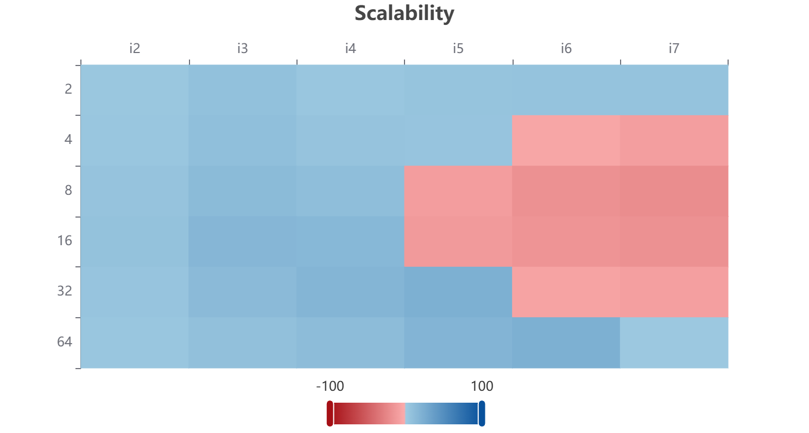
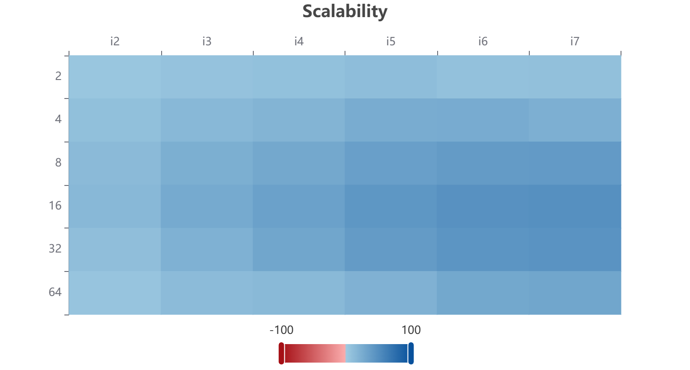

O que será avaliado
Enunciado dos slides: avaliar como a escalabilidade do código de difusão muda com os tipos de afinidade suportados pelo sistema operacional e pelo OpenMP, no mesmo nó usado na tarefa 12. Não há novo modelo físico: continua a difusão escalar $\partial_t u=\nu\nabla^2u$ com $r=0{,}02$, contorno Dirichlet fixo e $W=(N-2)^2M$ atualizações.
Base de código: a versão v4_numa.c da tarefa 12, com ponteiros privados, SIMD e first touch paralelo. O hash do fonte permaneceu igual ao da campanha anterior; o job alterou apenas OMP_PROC_BIND, OMP_PLACES e o número de threads. Fonte primária: slides da disciplina, seção de afinidade OpenMP.
r2n19. A Tarefa 12 usou r2n04; os nós têm a mesma CPU e topologia, mas não são a mesma máquina física. A comparação interna das quatro afinidades é válida, enquanto a comparação numérica direta com a Tarefa 12 fica fora do escopo.Relatório T13 · Script Slurm · Código reutilizado · Referência rápida
Hardware: por que o lugar da thread importa
Em Pacheco, cap. 2, sistemas MIMD de memória compartilhada dividem-se em UMA e NUMA: no primeiro, todo acesso custa o mesmo; no segundo, cada processador tem um bloco local e acessa o bloco remoto por hardware especial, mais devagar (Pacheco, § 2.3.2). Programar NUMA exige atenção à colocação de dados e threads; o ganho potencial é o acesso local mais rápido.
O gargalo de von Neumann e o Memory Wall explicam o resto: a CPU espera pela hierarquia L1/L2/L3 e DRAM. Caches exploram localidade temporal e espacial trazendo linhas contíguas (tipicamente 64 bytes, oito double) e distinguindo acerto de falta (Pacheco, § 2.2.1). Escritas usam write-through (propaga de imediato) ou write-back (marca a linha como dirty e adia a escrita); cópias incompatíveis são invalidadas (Pacheco, § 2.3.4).
A coerência pode usar snooping (difusão para todos, bom em barramento pequeno) ou diretório (só os detentores da linha são contactados, escalável). Como o hardware opera em linhas e não em variáveis, threads que escrevem posições distintas da mesma linha sofrem falso compartilhamento: invalidações contínuas sem compartilhamento real (Pacheco, § 2.3.4). No stencil, blocos contíguos por linhas limitam esse efeito às fronteiras; vizinhos lidos entre threads são compartilhamento verdadeiro, não falso.
Dependência RAW impõe a barreira temporal: o passo $k+1$ lê o passo $k$, então a barreira do omp for é obrigatória. O Power Wall limita frequência sob carga térmica; migrar threads muda quais núcleos aquecem e qual clock sustentado aparece. Nada disso é controlado pelo programa diretamente: afinidade só decide a colocação, o hardware decide latência e coerência.
Modelagem: mesmas métricas da tarefa 12
$$S(p)=\frac{T(1)}{T(p)},\qquad E(p)=\frac{S(p)}{p}.$$
Escalabilidade forte fixa $W$ e varia $p$; fraca usual cresce $W$ com $p$. Os modelos de Pacheco cap. 2 formalizam os tetos: Amdahl para trabalho fixo, $1/[f+(1-f)/p]$, e escalabilidade/gustafson para trabalho ampliado (Pacheco, §§ 2.6.1–2.6.3).
Regra de leitura: compare a mesma versão, mesmo $N$, mesmo $M$, mesmas flags, variando só $(p, \text{afinidade})$. Trocar afinidade não muda $W$ nem o algoritmo; se o tempo muda, a causa está em migração, localidade NUMA ou contenção de cache — não em "otimização" do kernel.
Afinidade na prática: OpenMP e sistema operacional
Pacheco (2011) não cobre OMP_PROC_BIND/OMP_PLACES (afinidade OpenMP 4+); a referência é a especificação OpenMP e os slides. Valores dos slides:
| Configuração | Efeito | Quando testar |
|---|---|---|
OMP_PROC_BIND=false | Sem afinidade; SO pode migrar threads | Base com migração livre |
OMP_PROC_BIND=true | Thread presa onde foi criada | Estabilidade mínima |
OMP_PROC_BIND=close | Threads próximas da master | Um socket, cache compartilhado |
OMP_PROC_BIND=spread | Threads espalhadas | Dois sockets, banda agregada |
OMP_PROC_BIND=master | Todas seguem a thread 0 | Diagnóstico de contenção apenas |
Granularidade com OMP_PLACES: cores, threads, sockets ou lista explícita como "{0:8:1},{8:8:1}". No NPAD, confirmar topologia com lscpu, numactl --hardware e cpuset do job; registrar OMP_DISPLAY_ENV=TRUE. Para controle do SO, taskset e numactl --cpunodebind --membind prendem processo e memória; afinidade OpenMP distribui as threads dentro do conjunto alocado.
export OMP_NUM_THREADS=16 OMP_DISPLAY_ENV=VERBOSE
export OMP_PROC_BIND=false; unset OMP_PLACES
./v4_numa 1026 500 0
export OMP_PROC_BIND=close OMP_PLACES=cores
./v4_numa 1026 500 0
export OMP_PROC_BIND=close OMP_PLACES=threads
./v4_numa 1026 500 0
export OMP_PROC_BIND=spread OMP_PLACES=threads
./v4_numa 1026 500 0Interação com first touch: páginas tendem ao domínio que as escreve primeiro. A versão v4 inicializa e evolui os campos com distribuição estática, de modo que a afinidade adotada acompanha as duas fases. Isso reduz uma fonte de confusão, mas não mede diretamente migrações, acessos NUMA remotos ou tráfego de cache.
O que foi executado
O job 2107610 usou exclusivamente um nó amd-512 com dois AMD EPYC 7713, 128 núcleos físicos, SMT2, 256 CPUs lógicas e oito domínios NUMA. O Slurm forneceu o cpuset 0-63,128-191. A compilação manteve C11, -O2, -fopenmp, avisos estritos, -ffp-contract=off e instrumentação manual do PaScal.
Cada afinidade cruzou $p=1,2,4,8,16,32,64$ com sete cargas de 262.144 a 16.777.216 células internas: 49 pontos por JSON e uma repetição por ponto. O Viewer analisou Whole Program (Region 0), que inclui alocação, inicialização e evolução. Sem repetições adicionais, não há mediana nem dispersão; diferenças pequenas e células isoladas devem ser lidas com cautela.
As quatro configurações novas foram: sem binding, close+cores, close+threads e spread+threads. spread+cores já havia sido medido na Tarefa 12 e não foi reanalisado.
Resultados no PaScal Viewer
Nos mapas abaixo, as linhas são as contagens de threads e as colunas $i2$–$i7$ são cargas crescentes. Azul indica região relativamente favorável na escala normalizada do Viewer; vermelho indica perda relativa. Esses mapas não mostram segundos nem substituem análises separadas de speedup, eficiência, escalabilidade forte ou fraca.


close+cores: a faixa favorável avança com mais threads.
close+threads: regiões mistas nas cargas maiores.
spread+threads: todas as células ficaram na faixa azul.spread+threads apresentou o mapa mais uniforme entre as quatro novas execuções. As configurações sem binding e com close alternaram faixas favoráveis e desfavoráveis, sobretudo nas cargas maiores e em valores intermediários de $p$. A distribuição mais ampla das threads é compatível com o padrão observado, mas o experimento não prova saturação de memória, redução de acessos NUMA remotos nem outra causa microarquitetural específica.
Verifique sua compreensão
Escolha uma alternativa e abra a resposta. Em cada questão, as quatro alternativas têm a mesma contagem de palavras e caracteres.
Fontes e material de execução
Enunciado e políticas: slides da disciplina (afinidade OpenMP, PLACES). Base em P. Pacheco, An Introduction to Parallel Programming (2011), cap. 2: NUMA/UMA (§ 2.3.2), cache (§ 2.2.1), coerência e falso compartilhamento (§ 2.3.4), desempenho (§§ 2.6.1–2.6.3). Evidência experimental: quatro JSONs do job 2107610 e quatro mapas de escalabilidade exportados do PaScal Viewer.
Apêndice: Referência rápida
| Variável / ferramenta | Sintaxe | Regra prática |
|---|---|---|
OMP_NUM_THREADS | export OMP_NUM_THREADS=16 | Fixar p por ponto; cobrir até núcleos físicos. |
OMP_PROC_BIND | false|true|close|spread|master | Comparar close contra spread no mesmo p. |
OMP_PLACES | cores|threads|sockets|"{0:8:1},..." | Granularidade da amarração das threads. |
OMP_DISPLAY_ENV | export OMP_DISPLAY_ENV=TRUE | Registrar afinidade efetiva no log. |
lscpu, numactl | numactl --hardware | Evidência de sockets, núcleos e nós. |
taskset | taskset -c 0-15 ./prog | Prender processo no SO quando preciso. |
Resumo executivo: $S=T(1)/T(p)$; $E=S/p$; Amdahl $1/[f+(1-f)/p]$; NUMA local < remoto; first touch decide o domicílio das páginas; afinidade decide o domicílio das threads; medir o par antes de concluir.